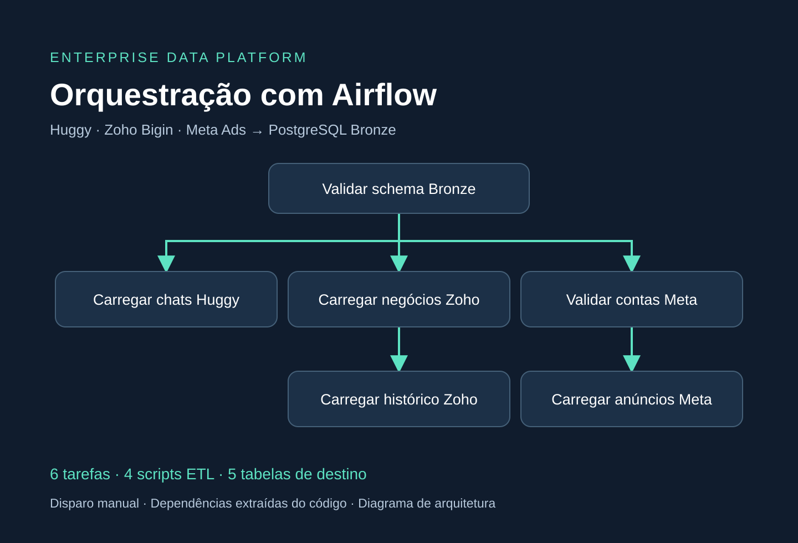

APACHE AIRFLOW · PYTHON · POSTGRESQL · DOCKER
Quatro cargas de negócio, um fluxo de ingestão.
O DAG enterprise_data_platform_bronze coordena a ingestão de conversas Huggy, negócios e histórico Zoho Bigin e anúncios Meta Ads na camada Bronze do PostgreSQL.

Diagrama de arquitetura elaborado a partir do código; não é uma captura da interface do Airflow.
O problema
As extrações têm pré-requisitos diferentes. O histórico comercial precisa dos negócios já carregados; anúncios dependem do cadastro das contas. O fluxo torna essas dependências explícitas e verifica as tabelas de destino antes de iniciar as cargas.
Como o DAG organiza o trabalho
- validate_bronze_schema: verifica a existência das cinco tabelas esperadas em Bronze.
- load_huggy_chats: executa o script de ingestão de conversas.
- load_zoho_deals → load_zoho_history: carrega negócios antes de consultar seu histórico.
- validate_meta_accounts → load_meta_ads: verifica o cadastro das contas antes de buscar anúncios.
Depois da validação inicial, os ramos ficam elegíveis para execução independente. O paralelismo efetivo depende do executor e da capacidade do ambiente.
Decisões de implementação
- PythonOperator chama funções que executam os quatro scripts com subprocess.run(check=True), propagando falhas do processo para a tarefa.
- Credenciais são obtidas de Airflow Variables e repassadas aos scripts por variáveis de ambiente.
- Consultas a information_schema e à dimensão de contas antecipam erros de configuração.
- O ambiente usa uma imagem baseada em Apache Airflow 2.9.2 e persistência em PostgreSQL.
Dependências do DAG
validate_schema >> [huggy, zoho_deals, meta_accounts]
zoho_deals >> zoho_history
meta_accounts >> meta_adsTrecho de dependências do DAG inspecionado. Os nomes correspondem às tarefas descritas acima.
Escopo verificado
Inspeção dos arquivos locais em 02/11/2026: um DAG, seis tarefas, quatro scripts ETL e cinco tabelas Bronze esperadas. O fluxo tem schedule=None, catchup=False, max_active_runs=1 e retries=0: disparo manual, sem recuperação histórica automática, uma execução ativa por vez e sem retentativas automáticas.
A validação inicial confere a existência das tabelas; não certifica a qualidade de todos os registros. Esta apresentação documenta a implementação, sem afirmar sucesso ponta a ponta, duração de carga ou volume processado pelo Airflow. Transformações Silver/Gold e dbt não fazem parte deste DAG.